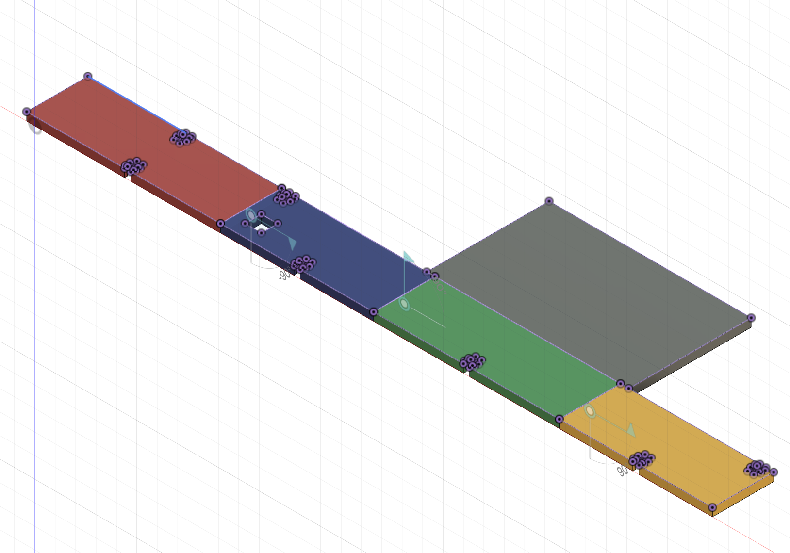
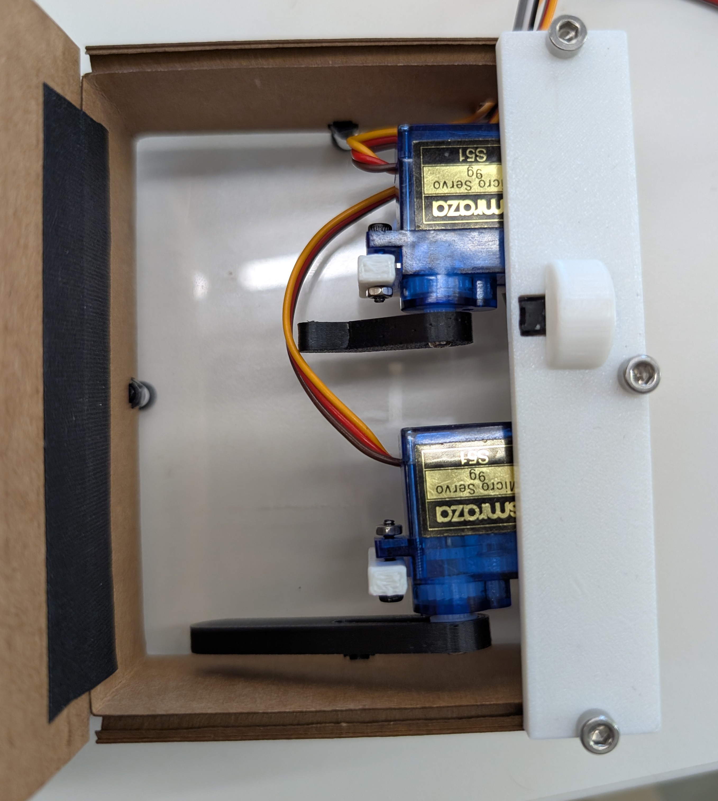

A Useless Box with Attitude
For my final project, I recreated and modified the Useless Box we started in class (credit: Kassia Love).
This is a box with a switch that the user can press, after which the box closes itself by instantly hitting
the switch. Modifications were added (described below) in code to adjust the behaviour of the Useless Box to
ascribe a kind of "personality" to it, making the experience of interacting with it slightly more interesting.
The box was modelled in Fusion and then laser-cut out of cardboard, with cutouts on the sides for the bottom to be attached with nuts and bolts. The lid was attached using tape to create an easily movable "hinge." (Click here to view or download the Fusion drawing.)
The switch was 3D-printed, and as were the portion of the top of the box with a slot for the switch, the components holding the servo motors up against the top of the box, the "arm" component pushing the box lid upwards and the "arm" component pushing the switch back to 0 (closed state). Two servo motors were used for the arm components, one for the switch (triggered after the box lid is lifted by the other arm), and the other for the box lid (triggered after the box is pressed open by the user).
Then, the switch and servo motors were wired and programmed in Arduino. The code is below.
#include <Servo.h>
// Servo motors
Servo lidServo;
Servo switchServo;
// corresponding pin numbers for the components
int lidServoPin = 6;
int switchServoPin = 7;
int switchPin = 5;
// variable to store the input value (1 for on, 0 for off)
int val;
void setup() {
lidServo.attach(lidServoPin);
switchServo.attach(switchServoPin);
pinMode(switchPin, INPUT_PULLUP);
// initial positions of the servo motors (arms)
lidServo.write(180);
switchServo.write(180);
}
void loop() {
// continuously read the value of the switchPin
// 0 if closed, 1 if opened
val = digitalRead(switchPin);
if (val == 1) {
delay(500);
// lid is lifted
lidServo.write(90);
delay(500);
// switch is turned off
switchServo.write(0);
delay(300);
// switch arm retracts
switchServo.write(180);
delay(200);
// lid arm retracts
lidServo.write(180);
}
}
To incorporate personality, the code was modified to randomly select for the behaviour of the Useless Box on a given press. The code and demo are shown below.
#include <Servo.h>
// Servo motors
Servo lidServo;
Servo switchServo;
// corresponding pin numbers for the components
const int lidServoPin = 6;
const int switchServoPin = 7;
const int switchPin = 5;
// variable to store the input value (1 for on, 0 for off)
int val;
void setup() {
lidServo.attach(lidServoPin);
switchServo.attach(switchServoPin);
pinMode(switchPin, INPUT_PULLUP);
// start with box fully closed
lidServo.write(180);
switchServo.write(180);
// seed the PRNG w/ some noise
randomSeed(analogRead(A0));
}
void loop() {
// read input (0 = closed, 1 = opened)
val = digitalRead(switchPin);
if (val == 1) {
delay(200);
// choose one of four personalities
int personality = random(0, 4);
switch (personality) {
// normal/default (moderate speed)
case 0:
move(90, 0, 500, 500, 300, 200);
break;
// slow (w/ long pauses)
case 1:
move(90, 0, 2000, 300, 300, 200);
break;
// fast (w/ short pauses)
case 2:
move(90, 0, 500, 300, 100, 50);
break;
// deceptive (slow, then fast)
case 3:
// lidServo.write(140);
// delay(random(200, 800));
// lidServo.write(180);
// delay(random(100, 400));
move(90, 0, random(1500,2000), 300, random(100,300), random(100,300));
break;
}
// go back to closed position if not already
lidServo.write(180);
switchServo.write(180);
// small delay
delay(300);
}
}